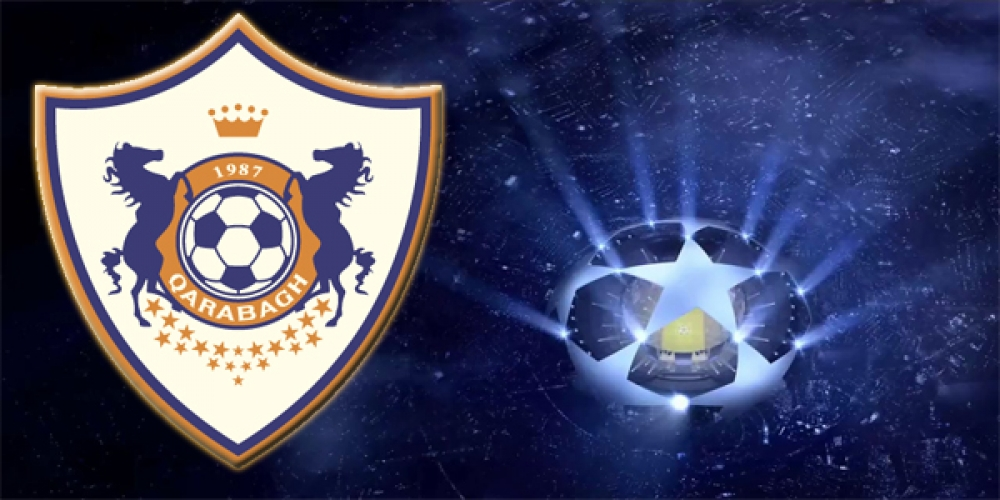

$
€
£
₺
Azerbaijan’s FC Qarabag to face HungarianFerencváros in UCL 3rd qualifying round
FC Qarabag of Azerbaijan's Qarabag will take on Hungary’s Ferencváros in the third qualifying round of UEFA Champions League, News.az reports.
The first leg will be played at Tofig Bahramov Stadium in Baku, Azerbaijan at 20:00 Baku time on August 3, while the return match will take place on August 9 in Budapest, Hungary.